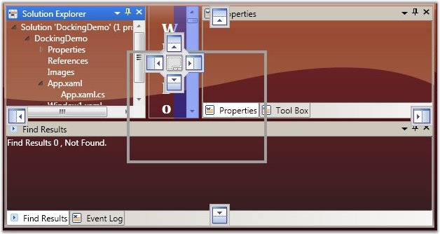
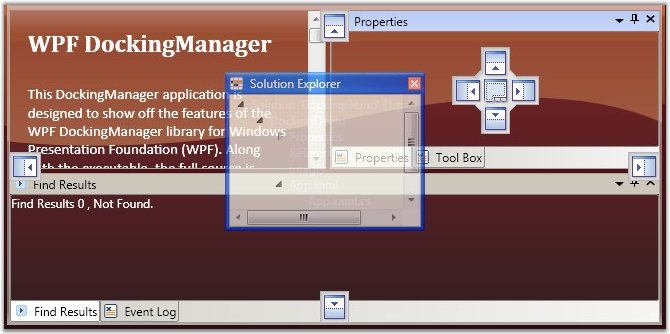
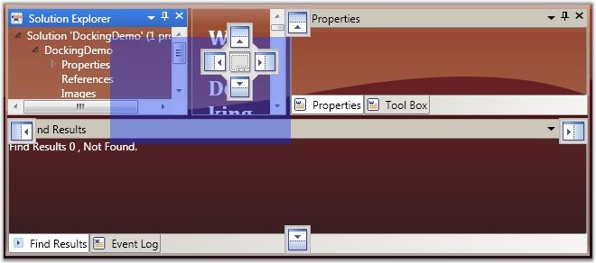

The DockingManager enables you to set different drag modes, when a docking window is being dragged. It supports the following three drag modes.
· Normal DragMode
· Border DragMode and
· Shadow DragMode
The DraggingType property of DockingManager is used to change the drag mode. The options provided by this property are as follows:
· NormalDragging (Normal DragMode)
· BorderDragging (Border DragMode) and
· ShadowDragging (Shadow DragMode)
The following code snippet is used to change the Drag mode of the DockingManager.
|
[XAML] <!--Setting the Normal Drag Mode--> <sftools:DockingManager Name="DocManager1" DraggingType="NormalDragging"/> <!--Setting the Border Drag Mode--> <sftools:DockingManager Name="DocManager1" DraggingType="BorderDragging"/> <!--Setting the Shadow Drag Mode--> <sftools:DockingManager Name="DocManager1" DraggingType="ShadowDragging"/> |
|
[C#] //Setting the Normal Drag Mode. this.DockingManager.DraggingType = DraggingType.NormalDragging;
//Setting the Border Drag Mode. this.DockingManager.DraggingType = DraggingType.BorderDragging;
//Setting the Shadow Drag Mode. this.DockingManager.DraggingType = DraggingType.ShadowDragging; |

Figure 336: Normal Drag Mode

Figure 337: Border Drag Mode

Figure 338: Shadow Drag Mode